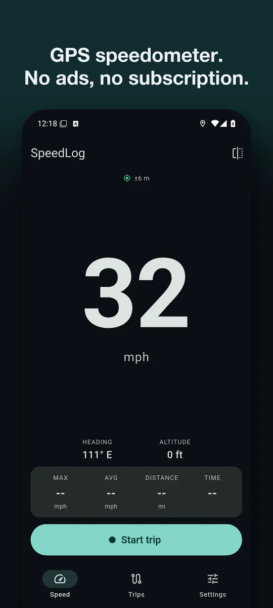
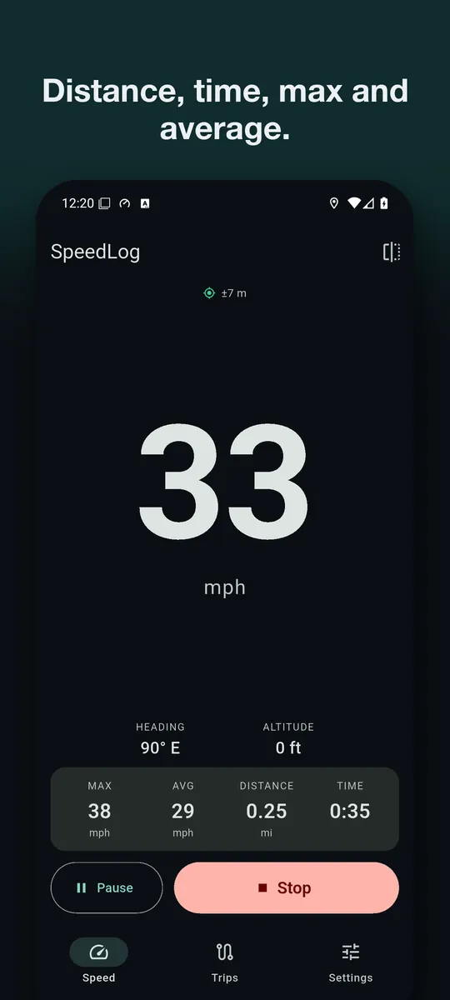
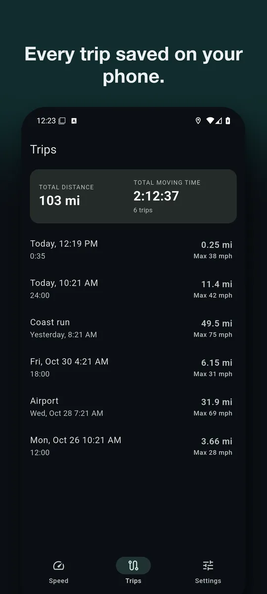
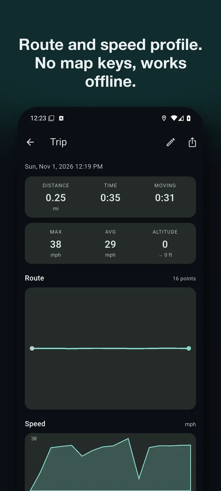
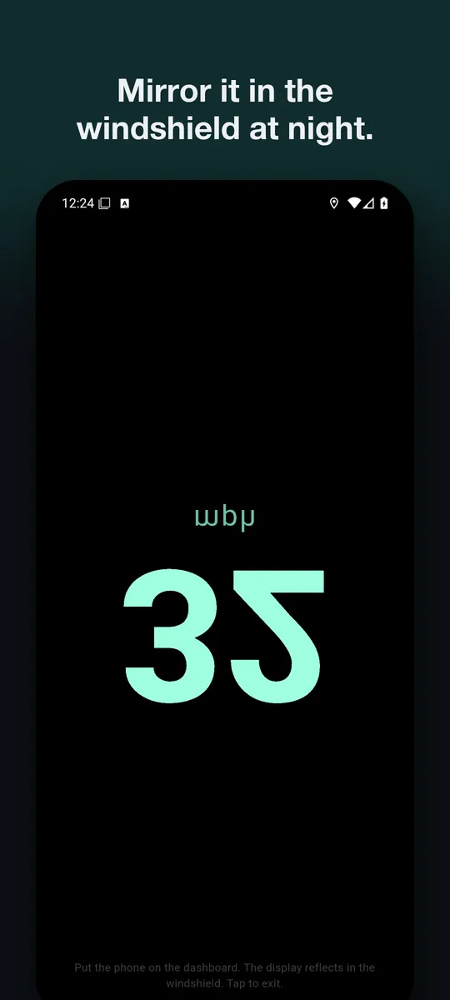
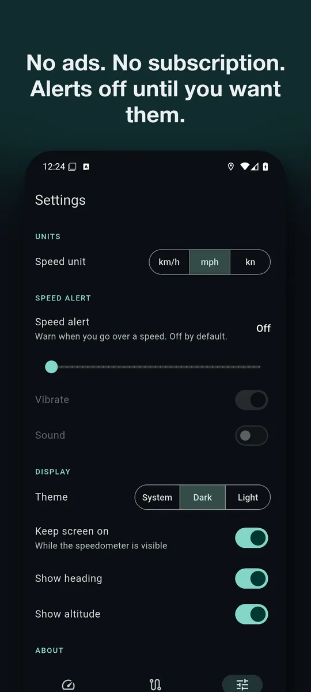

A GPS speedometer with no ads and no subscription
SpeedLog shows your speed in km/h, mph or knots and records every trip: distance, moving time, max and average speed, route and speed profile. It works offline, needs no account and sends nothing anywhere.
Get it on Google PlayAndroid. Free: speedometer, HUD mirror and three saved trips. SpeedLog Pro, one in-app purchase paid once: unlimited trips, GPX and CSV export, speed alert.






What it does
Speedometer
Large digits in km/h, mph or knots. Smoothed GPS speed that reads 0 when you stop. Heading, altitude and GPS accuracy under the dial.Trip log and odometer
One button to start, pause and stop. Distance, moving time, max and average speed, saved on your phone with the route and a speed graph.HUD mirror
A mirrored display that reflects in the windshield at night. How to set it up.GPX and CSV export
Every point with time, position, altitude and speed, ready for maps, spreadsheets or training apps. Details.Where people use it
- In the car, as a second speedometer, or to check how far the dashboard one reads high. Why they differ, and a free speedometer difference calculator.
- On a bike, e-bike, scooter or motorbike, as a speed tracker and trip meter.
- Walking, running and hiking, for distance, time and average speed.
- On a boat, with speed in knots. Need another unit? Use the speed converter.
Why no ads?
Most speedometer apps are free to install, then ask for a weekly subscription or show full-screen ads while you drive. SpeedLog is free to use, with one small unlock for people who want more. There is no advertising code, no analytics and no account, so there is nothing to sell.
Support
Questions, bugs, or feature requests: email contact@eastframe-technology.com. A human reads every message, usually the same day.
Before writing about a speed reading of 0: SpeedLog needs a GPS fix, which indoors can take a minute. The chip under the title shows the current accuracy.
Frequently asked
Does recording keep working with the screen off? Yes. Start a trip, lock the phone, and the trip keeps recording using the standard "while using" permission. Android shows a notification, which goes away when you stop the trip.
Why does it ask for location only "while using"? Because that is all it needs. SpeedLog never asks for "always" access.
Does it work without mobile data? Yes. GPS works without a data connection, and SpeedLog draws routes without map tiles, so it works the same in airplane mode with location on.
How do I get my trips out? Open a trip and use the share button to export GPX or CSV.
Is there a subscription? No. SpeedLog is free; SpeedLog Pro is a single purchase. Restore it on a new phone from Settings.
Privacy policy
Effective 6 November 2026. SpeedLog is published by Eastframe Technology LLC.
What the app collects: nothing. SpeedLog has no account system, no analytics, no advertising, and no crash reporting service. It sends no data to us or to anyone else.
Location. The app reads your device's location to show your speed, heading and altitude, and to record trips you start. Location is read only while the app is open, or while a trip you started is recording with the screen off. The app asks for "while using the app" permission and never asks for "always" access. Location is processed on your device and stored there only as part of a recorded trip.
Trips. Recorded trips are stored in a local database on your device until you delete them or uninstall the app. If you export a trip as GPX or CSV, the file goes to the app or service you choose in the share sheet.
Settings such as units and theme are stored locally on the device.
Purchases are handled by the App Store or Google Play. We do not see your payment details. On Android, the app includes Google Play's billing library, which has the internet permission and connects to Google Play to handle purchases. Google's privacy policy applies to that connection.
Third parties. The app contains no third-party advertising or analytics code. The only external links are this page and the store's own review and listing pages, opened at your request.
Children. SpeedLog is not directed at children and collects no personal information from anyone.
Changes. A new version of this policy will be published at this address with a new effective date.